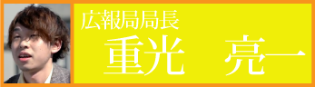

制作局(15人)
石川七瀬 今市翔子 中島 悠 矢野美由紀
川合智大 小林沙綾夏 篠原 舞 栗田春奈
石田梨璃香 伊藤優作 中村雄大 前田裕佳
森由里香 森井和輝
技術局(27人)
戸祭廣紀 野村友子 福田悠里 中西有華
日比野岳大 柳 卓知 赤木里穂 安藤太騎
池澤昇平 大谷一誠 中田千裕 安田 真
麻野貴義 伊藤圭介 井上千晶 大槻晃也
勝又 史 金子裕加里 齊藤龍馬 下出修也
志立裕彦 中森達也 濱上紗綾 福田朋央
森本泰英 吉田 瞳
広報局(15人)

清水遼平 工藤優輔 竹田 幹 竹田友香
上田凪沙 中野祐貴 生駒明子 伊東由貴
小栗暢志希 北村貴子 高岡奈央 藤原正義
古藪咲恵花 岡本紗季